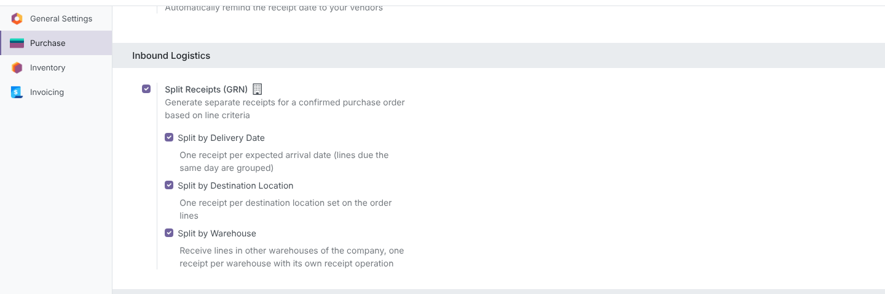
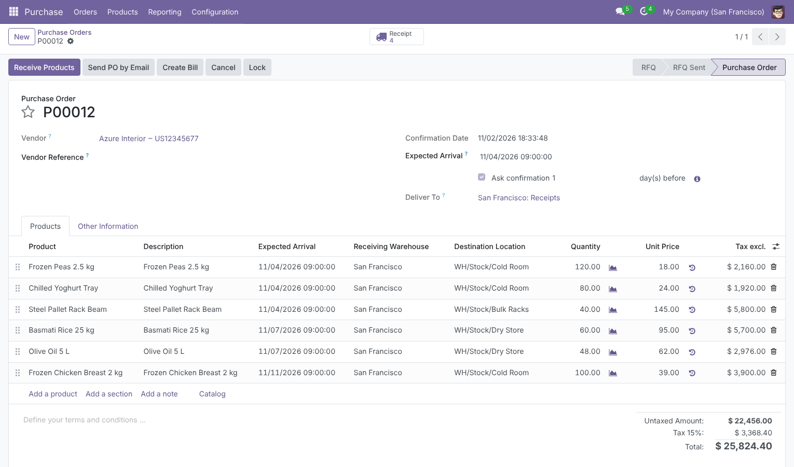
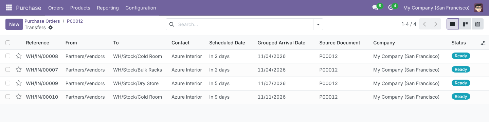
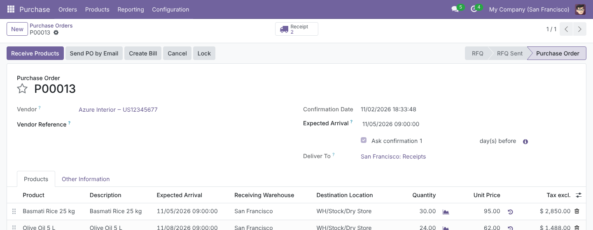
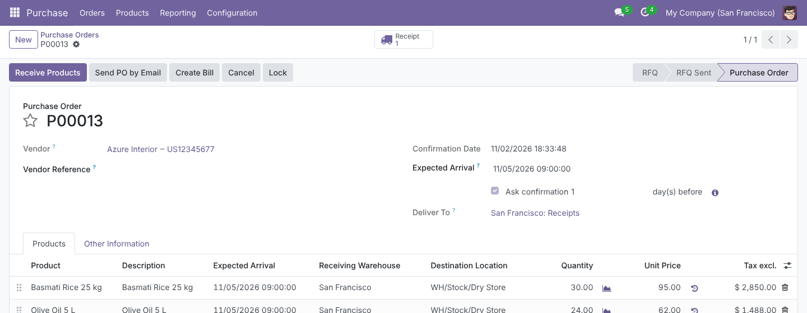
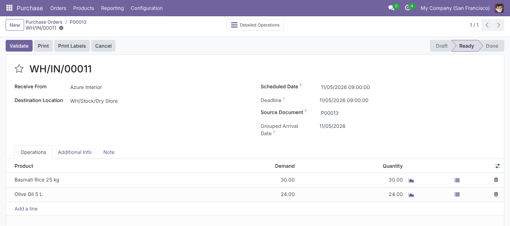
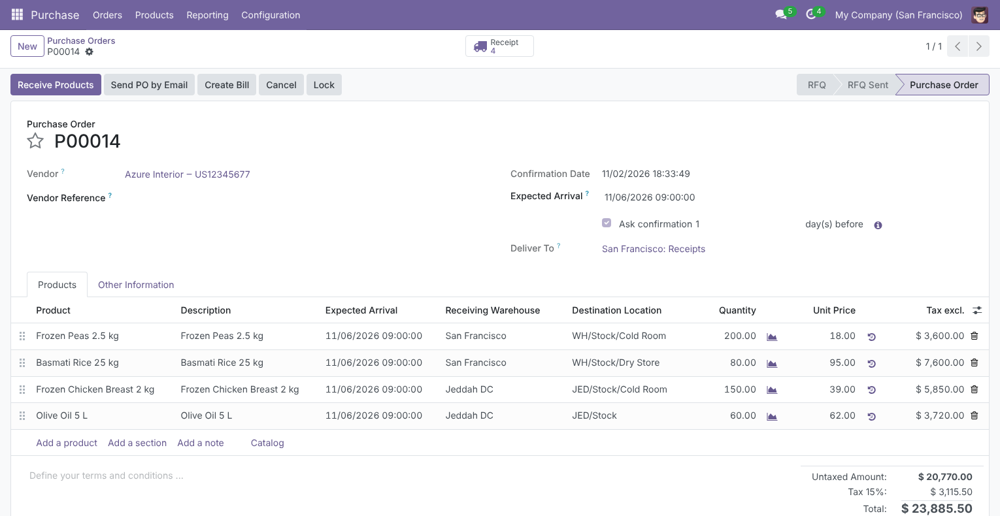
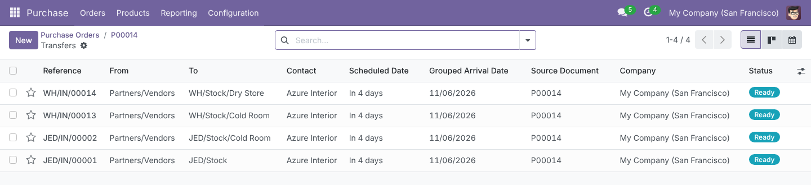
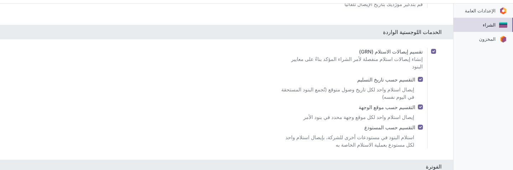
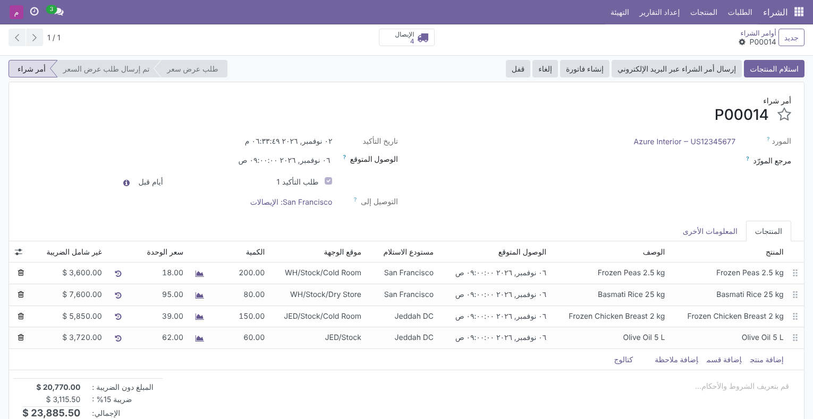

Purchase · Inventory · Inbound Logistics
Split Receipts (GRN) by Date, Location & Warehouse
Confirm one purchase order and get one receipt per expected arrival day, per destination location and per warehouse of your company. When a line’s date, location or warehouse changes later, its stock moves follow it and receipts left empty are removed.
Odoo 17.0
Community & Enterprise
40 automated tests
Arabic · RTL
Technical name: purchase_split_grn
LGPL-3
3 criteria
Delivery date, destination location and warehouse, alone or combined
1 receipt
per arrival day × location × warehouse, created at confirmation
0 empty receipts
Moves are re-routed on change and emptied receipts deleted
227 tests
40 of its own plus the 187 core purchase_stock tests, green with splitting on
Why this module
Vendors rarely deliver a whole order at once, and different goods go to different parts of the warehouse – or to different warehouses. Standard Odoo still puts every line into one receipt.
In standard Odoo 17
- A confirmed PO creates one receipt, whatever the expected arrival dates of its lines.
- The receipt’s scheduled date is the earliest line date, so later deliveries look late or early.
- Every line is received into the same destination (the operation type’s default).
- Storekeepers split receipts by hand, creating backorders and moving lines between transfers.
- Changing a line date after confirmation only updates the move deadline; the receipt stays as it was.
- Extra quantity added later goes to the first open receipt, not the one for that delivery.
- A PO is received in one warehouse (its Deliver To); goods for another branch need a second PO or a later inter-warehouse transfer.
With this module
- One receipt per expected arrival day, per destination location, or per both.
- Each receipt carries its own Grouped Arrival Date and a matching scheduled date.
- A Destination Location column on PO lines, defaulting to the order’s receipt location.
- Receipts are ready to validate as delivered: no manual splitting.
- Changing a line’s date or location moves its stock moves to the matching receipt; empty receipts are deleted.
- New lines and quantity changes land in the receipt that matches the line’s date and location.
- A Receiving Warehouse per line: one PO, receipts created directly in each warehouse with its own receipt operation, sequence and routes.
How it works
No new menus to learn: it works on the purchase orders and receipts you already use.
1
Enable
Tick Split Receipts (GRN) in Purchase settings and choose any of the three criteria.
2
Plan the lines
Set an Expected Arrival, Receiving Warehouse and Destination Location on each PO line.
3
Confirm
Lines are grouped by day, location and warehouse; one receipt is created per group.
4
Stay in sync
Edit dates, locations, warehouses or quantities later; moves follow and empty receipts disappear.
Features
Screenshots use Odoo 17 demo data from Azure Interior: P00012 with six lines due on three different days into Cold Room, Bulk Racks and Dry Store of the San Francisco warehouse, and P00014 split between San Francisco and a second warehouse, Jeddah DC.
Settings
One switch, three independent criteria
Purchase › Configuration › Settings › Inbound Logistics. Tick Split Receipts (GRN) (off by default), then any combination of Split by Delivery Date, Split by Destination Location and Split by Warehouse (shown when the company uses several warehouses). Settings are per company. With the main switch on and no criterion ticked, a warning reminds you that nothing will be split.

Feature 1
Plan arrival day and destination per line
When splitting by location is on, PO lines get a Destination Location column. It defaults to the order’s Deliver To location and can be changed per line to any internal or transit location of the same warehouse. When splitting by date is on, the Expected Arrival column is shown by default. Here, six lines in one warehouse confirm into 4 receipts.

Feature 2
One receipt per arrival day and destination
Lines sharing both the same day and the same destination share a receipt. Frozen Peas and Chilled Yoghurt (Cold Room, 4 Nov) are received together; Steel Pallet Rack Beam (Bulk Racks, same day) gets its own receipt; Frozen Chicken (Cold Room, 11 Nov) another. The optional Grouped Arrival Date column shows each receipt’s key.

The receipt’s destination, scheduled date and deadline all match its lines; it is Ready to validate.
Grouping rule: lines are grouped by calendar day in the buyer’s timezone (the PO’s purchase representative, otherwise the current user). Example in Asia/Riyadh: 09:00 and 23:00 on 3 Nov are one receipt; 23:30 UTC on 3 Nov is already 4 Nov locally and goes with 4 Nov.
Feature 3
Receipts follow changes made after confirmation
On P00013, Basmati Rice is due 5 Nov and Olive Oil 8 Nov: 2 receipts. The vendor confirms both for 5 Nov; the buyer updates the Olive Oil date.


The Olive Oil move moved into the 5 Nov receipt; its old receipt was left empty and deleted. The smart button now shows 1 Receipt.

What happens on a change: the line’s open, unprocessed moves go to the receipt matching its new day and destination. If none exists and the old receipt held only those moves, that receipt is re-dated / re-located in place and keeps its reference. Otherwise a new receipt is created. Any receipt left without moves is deleted. The same applies to new lines and quantity changes on confirmed orders.
Feature 4
Receive one order in several warehouses
With Split by Warehouse on, PO lines get a Receiving Warehouse column. It defaults to the warehouse of the order’s Deliver To. Choose another warehouse of the same company and the line’s Destination Location switches to that warehouse’s receipt location; the location list is limited to that warehouse (plus transit locations). P00014 is one order for San Francisco and Jeddah DC.


Jeddah lines are received on JED/IN receipts, numbered by Jeddah’s own sequence; San Francisco lines on WH/IN. Combined here with location splitting, so each warehouse also gets one receipt per destination.
How it is done: each receipt for another warehouse is created with that warehouse’s receipt operation type, and its moves carry that warehouse and operation. So the receipt is numbered by that warehouse’s sequence, appears on its Inventory overview, and follows its own reception steps and push rules (e.g. Input › Stock in two-step reception). Lines for the order’s own warehouse keep the order’s operation type. Only warehouses of the order’s company can be chosen.
Feature 5
Arabic translation and right-to-left layout
Every label, help text and error message ships in Arabic (ar_001). Views use Odoo’s direction-aware layout, so the settings and order lines mirror correctly.


Built for real-world corner cases
Behaviour you can rely on in daily use, most of it pinned down by the test suite.
Receipts already being counted
Moves marked Picked, or whose Quantity was changed from the demand, are never moved, so the storekeeper’s count stays where it is.
Multi-step reception
Lines default to the warehouse’s Input, in the order’s warehouse or another one. If a receipt is already chained to the Input › Stock transfer, changing its destination from the PO is blocked with a clear message.
Reordering rules
Lines from replenishment keep the order’s destination; their moves still reach the rule’s sub-location exactly as in standard Odoo.
Location in the wrong warehouse
A line location that does not belong to the line’s Receiving Warehouse is rejected with a clear message.
Moving a line to another warehouse
After confirmation its moves go to a receipt of the new warehouse. A receipt is never re-numbered across warehouses: a new one is created and the emptied one deleted.
Changing the order’s Deliver To
Before confirmation, every line moves to the new warehouse: line warehouse and location are recomputed together, without tripping the location check.
Quantity changes
Increases and decreases stay in the line’s own receipt; decreasing below the received quantity is refused, as in standard Odoo.
Dropship and services
Customer-destination orders are never split by location; service lines and sections/notes are ignored.
Cancel & re-confirm
Cancelling the PO cancels all its receipts; running picking creation again never duplicates moves.
Switching a criterion off
Existing receipts stay as they are. With the warehouse criterion off, lines are received in the order’s own warehouse again.
Multi-company
Settings are stored per company; each order follows the settings of its own company, and only warehouses of that company can be chosen.
Security
No new access rights: the module works within standard Purchase and Inventory permissions.
| Who | Sees / can do |
|---|
| Administration / Settings | Changes the Inbound Logistics settings (standard Settings access). |
| Users with Storage Locations enabled | See and edit the Destination Location column on PO lines. |
| Users with Multi-Warehouses | See the Split by Warehouse option; the Receiving Warehouse column appears on PO lines while it is on. |
| All internal users | See the line Expected Arrival column by default while splitting by date is on (hidden technical group, set automatically from the setting). |
| Any purchase user confirming or editing a PO | Receipts are created and empty ones deleted on their behalf, like standard receipt creation. |
| Multi-company | Settings per company; line warehouses and locations limited to the order’s company. |
Technical details
| Odoo version | 17.0, Community and Enterprise |
| Depends on | purchase_stock |
| Python dependency | None |
| Menus | No new menus; works on Purchase › Orders and their receipts |
| Settings | Purchase › Configuration › Settings › Inbound Logistics |
| Models | Extends res.company, res.config.settings, purchase.order, purchase.order.line (new warehouse_id, location_dest_id), stock.picking (new split_grn_date) |
| Automated tests | 40 tests: settings, each criterion alone and combined, timezone grouping, receiving one split receipt, post-confirmation date/location/warehouse changes, re-keying and cleanup, new lines, quantity changes, processed moves, multi-step reception (own and other warehouse), receiving into another warehouse, reordering rules, cancellation, origin notes on every receipt, counted-but-not-picked moves. The 187 core purchase_stock tests also pass with all three criteria enabled, and with the feature off. |
| Languages | English, Arabic (ar_001) |
| License | LGPL-3 |